Redis
版本：
redis 3.2.11
第一节 Redis简介
1.1 NoSQL
NoSQL，泛指非关系型的数据库，NoSQL即Not-Only SQL，它可以作为关系型数据库的良好补充。随着互联网web2.0网站的兴起，非关系型的数据库现在成了一个极其热门的新领域，非关系数据库产品的发展非常迅速
而传统的关系数据库在应付web2.0网站，特别是超大规模和高并发的SNS类型的web2.0纯动态网站已经显得力不从心，暴露了很多难以克服的问题，例如：
1、High performance - 对数据库高并发读写的需求 web2.0网站要根据用户个性化信息来实时生成动态页面和提供动态信息，所以基本上无法使用动态页面静态化技术，因此数据库并发负载非常高，往往要达到每秒上万次读写请求。关系数据库应付上万次SQL查询还勉强顶得住，但是应付上万次SQL写数据请求，硬盘IO就已经无法承受了。其实对于普通的BBS网站，往往也存在对高并发写请求的需求，例如网站的实时统计在线用户状态，记录热门帖子的点击次数，投票计数等，因此这是一个相当普遍的需求。
2、Huge Storage - 对海量数据的高效率存储和访问的需求 类似Facebook，twitter，Friendfeed这样的SNS网站，每天用户产生海量的用户动态，以Friendfeed为例，一个月就达到了2.5亿条用户动态，对于关系数据库来说，在一张2.5亿条记录的表里面进行SQL查询，效率是极其低下乃至不可忍受的。再例如大型web网站的用户登录系统，例如腾讯，盛大，动辄数以亿计的帐号，关系数据库也很难应付。
3、High Scalability && High Availability- 对数据库的高可扩展性和高可用性的需求 在基于web的架构当中，数据库是最难进行横向扩展的，当一个应用系统的用户量和访问量与日俱增的时候，你的数据库却没有办法像web server和app server那样简单的通过添加更多的硬件和服务节点来扩展性能和负载能力。对于很多需要提供24小时不间断服务的网站来说，对数据库系统进行升级和扩展是非常痛苦的事情，往往需要停机维护和数据迁移，为什么数据库不能通过不断的添加服务器节点来实现扩展呢？
NoSQL数据库的产生就是为了解决大规模数据集合多重数据种类带来的挑战，尤其是大数据应用难题
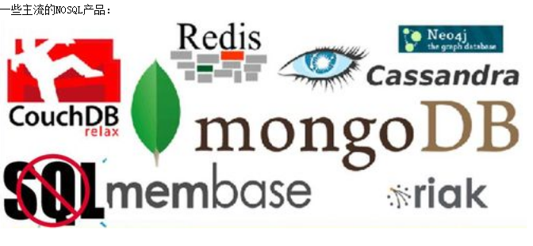
1.2 NoSQL的类别
1.2.1键值(Key-Value)存储数据库
相关产品： Tokyo Cabinet/Tyrant、Redis、Voldemort、Berkeley DB 典型应用： 内容缓存，主要用于处理大量数据的高访问负载。 数据模型： 一系列键值对 优势： 快速查询 劣势： 存储的数据缺少结构化
1.2.2 列存储数据库
相关产品：Cassandra, HBase, Riak 典型应用：分布式的文件系统 数据模型：以列簇式存储，将同一列数据存在一起 优势：查找速度快，可扩展性强，更容易进行分布式扩展 劣势：功能相对局限
1.2.3 文档型数据库
相关产品：CouchDB、MongoDB 典型应用：Web应用（与Key-Value类似，Value是结构化的） 数据模型： 一系列键值对 优势：数据结构要求不严格 劣势： 查询性能不高，而且缺乏统一的查询语法
1.2.4 图形(Graph)数据库
相关数据库：Neo4J、InfoGrid、Infinite Graph 典型应用：社交网络 数据模型：图结构 优势：利用图结构相关算法。 劣势：需要对整个图做计算才能得出结果，不容易做分布式的集群方案。
1.3 Redis是什么
2008年，意大利的一家创业公司Merzia推出了一款基于MySQL的网站实时统计系统LLOOGG，然而没过多久该公司的创始人 Salvatore Sanfilippo便对MySQL的性能感到失望，于是他决定亲自为LLOOGG量身定做一个数据库，并于2009年开发完成，这个数据库就是Redis。不过Salvatore Sanfilippo并不满足只将Redis用于LLOOGG这一款产品，而是希望更多的人使用它，于是在同一年Salvatore Sanfilippo将Redis开源发布，并开始和Redis的另一名主要的代码贡献者Pieter Noordhuis一起继续着Redis的开发，直到今天。
Salvatore Sanfilippo自己也没有想到，短短的几年时间，Redis就拥有了庞大的用户群体。Hacker News在2012年发布了一份数据库的使用情况调查，结果显示有近12%的公司在使用Redis。国内如新浪微博、街旁网、知乎网，国外如GitHub、Stack Overflow、Flickr等都是Redis的用户。 VMware公司从2010年开始赞助Redis的开发， Salvatore Sanfilippo和Pieter Noordhuis也分别在3月和5月加入VMware，全职开发Redis。
Redis是用C语言开发的一个开源的高性能键值对（key-value）数据库。它通过提供多种键值数据类型来适应不同场景下的存储需求，目前为止Redis支持的键值数据类型如下：
字符串类型
散列类型
列表类型
集合类型
有序集合类型Redis 与其他 key - value 缓存产品有以下三个特点： - Redis支持数据的持久化，可以将内存中的数据保存在磁盘中，重启的时候可以再次加载进行使用。 - Redis不仅仅支持简单的key-value类型的数据，同时还提供list，set，zset，hash等数据结构的存储。 - Redis支持数据的备份，即master-slave模式的数据备份。 Redis 提供的API支持：C、C++、C#、Clojure、Java、JavaScript、Lua、PHP、Python、Ruby、Go、Scala、Perl等多种语言。
1.4 Redis的应用场景
目前全球最大的Redis用户是新浪微博，在新浪有200多台物理机，400多个端口正在运行Redis，有+4G的数据在Redis上来为微博用户提供服务 - 取最新的N个数据（取最新文档、排行榜等） - 需要精确设定过期时间的应用 - 计数器应用 - 实时性要求的高并发读写 - 消息系统Pub/Sub - 构建队列 - 缓存
1.5 Redis优缺点
1.5.1 Redis 优势
对数据高并发读写（基于内存） 对海量数据的高效率存储和访问（基于内存） 对数据的可扩展性和高可用性 垂直扩展：提升硬件 水平扩展：集群
1.5.2 Redis 缺点
redis（ACID处理非常简单）无法做到太复杂的关系数据库模型
1.6 Redis面向互联网的解决方案
- 主从：一主多从，主机可写，从机备份。类似于Mysql的读写分离，存在问题是一但主节点down掉，整个Redis不可用。 - 哨兵(2.x)：启用一个哨兵程序(节点)，监控其余节点的状态，根据选举策略，进行主从切换。 缺点：每个节点的数据依旧是一致的，仍无法实现分布式的数据库。 - 集群(3.x)：结合上述两种模式，多主多从，实现高可用、分布式数据存储
第二节 Redis的安装
2.1 下载
从官网下载，Redis官网点击下载
通过SecureCRT将下载的文件上传到/opt/work目录
解压&编译&安装
cd /opt/work 切换到指定目录 tar -zxvf redis-3.2.11.tar.gz 解压 cd redis-3.2.11 切换到解压目录 make 编译 make PREFIX=/opt/work/redis install 安装
源码目录分析： 在/opt/work/src/redis3.2/下有一个redis.conf文件，这个文件为redis核心配置文件。 在/opt/work/src/redis3.2/src/下，有redis的常用命令，安装完成后，会将这些命令自动放入到安装路径下的bin目录下 在/opt/work/src/redis3.2/utils/下，有redis的服务启动脚本
2.2 配置和启动
redis.conf是redis的配置文件，redis.conf在redis源码目录。
注意修改port作为redis进程的端口,port默认6379。
拷贝配置文件到安装目录下
进入源码目录，里面有一份配置文件 redis.conf，然后将其拷贝到安装路径下
xxxxxxxxxxcd /opt/work/redis 切换目录mkdir conf 创建配置文件的目录cp /opt/work/redis-3.2.11/redis.conf /opt/work/redis/conf 复制配置文件./redis-server 启动redis关闭的方式
xxxxxxxxxxpkill redis serverkill 进程号/opt/work/redis/bin/redis-cli shutdown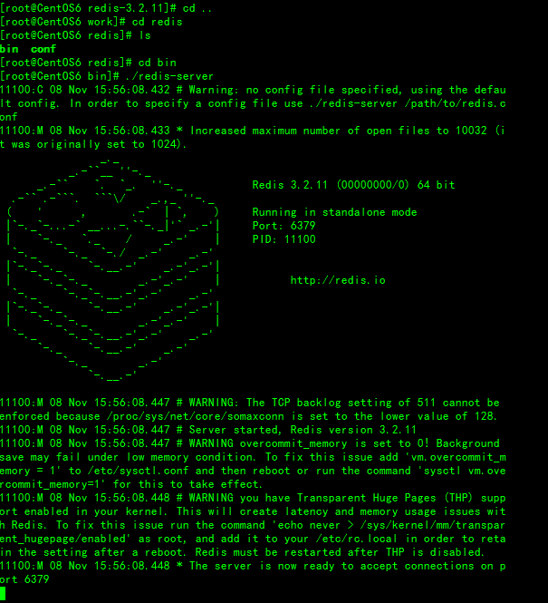
注意：这里直接执行Redis-server 启动的Redis服务，是在前台直接运行的(效果如上图)，也就是说，执行完该命令后，如果Lunix关闭当前会话，则Redis服务也随即关闭。正常情况下，启动Redis服务需要从后台启动，并且指定启动配置文件。
2.3 后端模式启动
修改redis.conf配置文件， daemonize yes 以后端模式启动
执行如下命令启动redis： vim /opt/work/redis/conf/redis.conf 编辑redis的配置文件，修改daemonize yes 保存即可
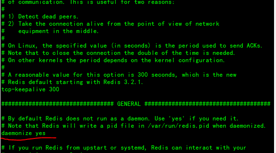
ps aux|grep redis 查询redis是否启动 /opt/work/redis/bin/redis-server 启动redis
redis.conf配置文件详解
xxxxxxxxxx4.1. Redis默认不是以守护进程的方式运行，可以通过该配置项修改，使用yes启用守护进程 daemonize no4.2. 当Redis以守护进程方式运行时，Redis默认会把pid写入/var/run/redis.pid文件，可以通过pidfile指定 pidfile /var/run/redis.pid4.3. 指定Redis监听端口，默认端口为6379，作者在自己的一篇博文中解释了为什么选用6379作为默认端口，因为6379在手机按键上MERZ对应的号码，而MERZ取自意大利歌女Alessia Merz的名字 port 63794.4. 绑定的主机地址 bind 127.0.0.14.5.当 客户端闲置多长时间后关闭连接，如果指定为0，表示关闭该功能 timeout 3004.6. 指定日志记录级别，Redis总共支持四个级别：debug、verbose、notice、warning，默认为verbose loglevel verbose4.7. 日志记录方式，默认为标准输出，如果配置Redis为守护进程方式运行，而这里又配置为日志记录方式为标准输出，则日志将会发送给/dev/null logfile stdout4.8. 设置数据库的数量，默认数据库为0，可以使用SELECT <dbid>命令在连接上指定数据库id databases 16 4.9. 指定在多长时间内，有多少次更新操作，就将数据同步到数据文件，可以多个条件配合 save <seconds> <changes> Redis默认配置文件中提供了三个条件： save 900 1 save 300 10 save 60 10000 分别表示900秒（15分钟）内有1个更改，300秒（5分钟）内有10个更改以及60秒内有10000个更改。4.10. 指定存储至本地数据库时是否压缩数据，默认为yes，Redis采用LZF压缩，如果为了节省CPU时间，可以关闭该选项，但会导致数据库文件变的巨大 rdbcompression yes4.11. 指定本地数据库文件名，默认值为dump.rdb dbfilename dump.rdb4.12. 指定本地数据库存放目录 dir ./4.13. 设置当本机为slav服务时，设置master服务的IP地址及端口，在Redis启动时，它会自动从master进行数据同步 slaveof <masterip> <masterport>4.14. 当master服务设置了密码保护时，slav服务连接master的密码 masterauth <master-password>4.15. 设置Redis连接密码，如果配置了连接密码，客户端在连接Redis时需要通过AUTH <password>命令提供密码，默认关闭 requirepass foobared4.16. 设置同一时间最大客户端连接数，默认无限制，Redis可以同时打开的客户端连接数为Redis进程可以打开的最大文件描述符数，如果设置 maxclients 0，表示不作限制。当客户端连接数到达限制时，Redis会关闭新的连接并向客户端返回max number of clients reached错误信息 maxclients 1284.17. 指定Redis最大内存限制，Redis在启动时会把数据加载到内存中，达到最大内存后，Redis会先尝试清除已到期或即将到期的Key，当此方法处理 后，仍然到达最大内存设置，将无法再进行写入操作，但仍然可以进行读取操作。Redis新的vm机制，会把Key存放内存，Value会存放在swap区 maxmemory <bytes>4.18. 指定是否在每次更新操作后进行日志记录，Redis在默认情况下是异步的把数据写入磁盘，如果不开启，可能会在断电时导致一段时间内的数据丢失。因为 redis本身同步数据文件是按上面save条件来同步的，所以有的数据会在一段时间内只存在于内存中。默认为no appendonly no4.19. 指定更新日志文件名，默认为appendonly.aof appendfilename appendonly.aof4.20. 指定更新日志条件，共有3个可选值： no：表示等操作系统进行数据缓存同步到磁盘（快） always：表示每次更新操作后手动调用fsync()将数据写到磁盘（慢，安全） everysec：表示每秒同步一次（折衷，默认值） appendfsync everysec4.21. 指定是否启用虚拟内存机制，默认值为no，简单的介绍一下，VM机制将数据分页存放，由Redis将访问量较少的页即冷数据swap到磁盘上，访问多的页面由磁盘自动换出到内存中（在后面的文章我会仔细分析Redis的VM机制） vm-enabled no4.22. 虚拟内存文件路径，默认值为/tmp/redis.swap，不可多个Redis实例共享 vm-swap-file /tmp/redis.swap4.23. 将所有大于vm-max-memory的数据存入虚拟内存,无论vm-max-memory设置多小,所有索引数据都是内存存储的(Redis的索引数据 就是keys),也就是说,当vm-max-memory设置为0的时候,其实是所有value都存在于磁盘。默认值为0 vm-max-memory 04.24. Redis swap文件分成了很多的page，一个对象可以保存在多个page上面，但一个page上不能被多个对象共享，vm-page-size是要根据存储的 数据大小来设定的，作者建议如果存储很多小对象，page大小最好设置为32或者64bytes；如果存储很大大对象，则可以使用更大的page，如果不 确定，就使用默认值 vm-page-size 324.25. 设置swap文件中的page数量，由于页表（一种表示页面空闲或使用的bitmap）是在放在内存中的，，在磁盘上每8个pages将消耗1byte的内存。 vm-pages 1342177284.26. 设置访问swap文件的线程数,最好不要超过机器的核数,如果设置为0,那么所有对swap文件的操作都是串行的，可能会造成比较长时间的延迟。默认值为4 vm-max-threads 44.27. 设置在向客户端应答时，是否把较小的包合并为一个包发送，默认为开启 glueoutputbuf yes4.28. 指定在超过一定的数量或者最大的元素超过某一临界值时，采用一种特殊的哈希算法 hash-max-zipmap-entries 64 hash-max-zipmap-value 5124.29. 指定是否激活重置哈希，默认为开启（后面在介绍Redis的哈希算法时具体介绍） activerehashing yes4.30. 指定包含其它的配置文件，可以在同一主机上多个Redis实例之间使用同一份配置文件，而同时各个实例又拥有自己的特定配置文件 include /path/to/local.conf2.4 启动多个redis进程
2.4.1 启动时指定端口
启动时指定端口可在一台服务器启动多个redis进程
cd /opt/work/redis/bin ./redis-server ../conf/redis.conf --port 6380
2.4.2 创建多个redis目录
创建多个redis目录，以端口号命名,推荐使用此种方式
xxxxxxxxxx比如：创建6381、6382两个目录，将redis的安装文件bin和conf拷贝至这两个目录。修改6381目录下的redis.conf设置端口号为6381修改6382目录下的redis.conf设置端口号为6382启动6381和6382目录下的redis-server程序：cd 6381./redis-server . /redis.confcd 6382./redis-server . /redis.conf2.5 redis客户端
在redis的安装目录中有redis的客户端，即redis-cli（Redis Command Line Interface），它是Redis自带的基于命令行的Redis客户端
ps aux|grep redis 查询redis是否启动 ./redis-server ../conf/redis.conf 启动redis ./redis-cli -h 127.0.0.1 -p 6379 启动redis客户端 ping Redis提供了PING命令来测试客户端与Redis的连接是否正常，如果连接正常会收到回复PONG
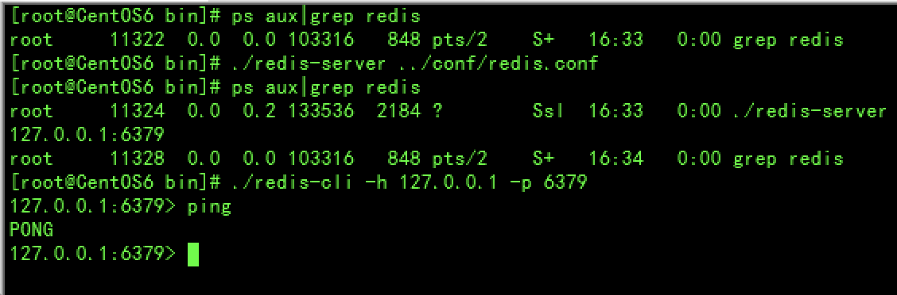
2.6 远程连接
默认不允许远程连接，需要修改一下信息才可以进行修改
xxxxxxxxxx将redis.conf中的bind 127.0.0.1进行注释vim /opt/work/redis/conf/redis.conf 编辑配置文件/opt/work/redis/bin/redis-server ../conf/redis.conf 启动redis/opt/work/redis/bin/redis-cli 打开客户端，连接成功，再进行下一步config set requirepass lx 设置密码quit 退出客户端/opt/work/redis/bin/redis-cli 打开客户端auth lx 输入密码使用远程进行连接 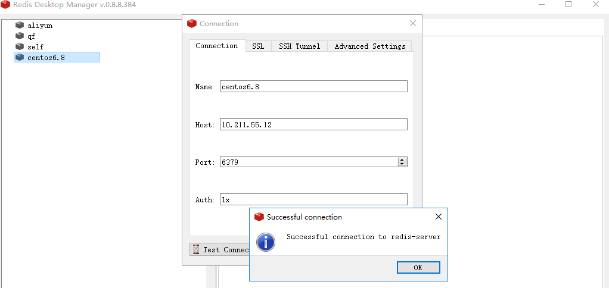
第三节 redis常用命令
3.1 基础命令
3.1.1 操作String类型
String 数据结构是简单的key-value类型，value其实不仅是String，也可以是数字，是包含很多种类型的特殊类型，并且是二进制安全的。比如序列化的对象进行存储，比如一张图片进行二进制存储，比如一个简单的字符串,数值等等。
常用命令：
设值：set name zhangsan (说明：多次设置name会覆盖) 命令： setnx name lx： (not exist) 如果name不存在，则设值。如果name存在，则不设值并返回0； setex name 10 lx :(expired) 设置name的值为lx，过期时间为10秒，10秒后name清除（key也清除） setrange string range value 替换字符串 取值: get name 删值：del name 批量写：mset k1 v1 k2 v2 ... 批量读：mget k1 k2 k3 一次性设值和读取（返回旧值，写上新值）:getset name lx 数值类型自增减：incr，decr，incrby，decrby 字符串拼接：append key value 字符串长度：strlen key
命令演示
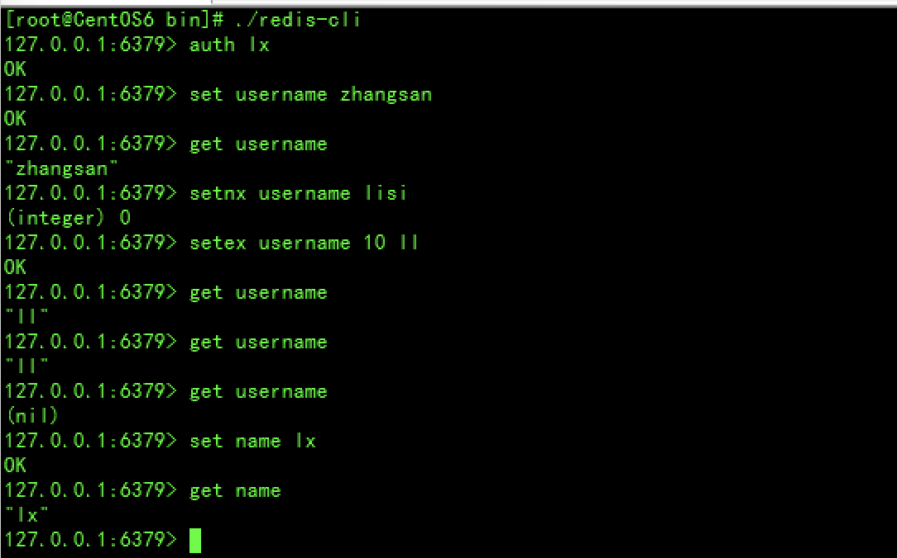
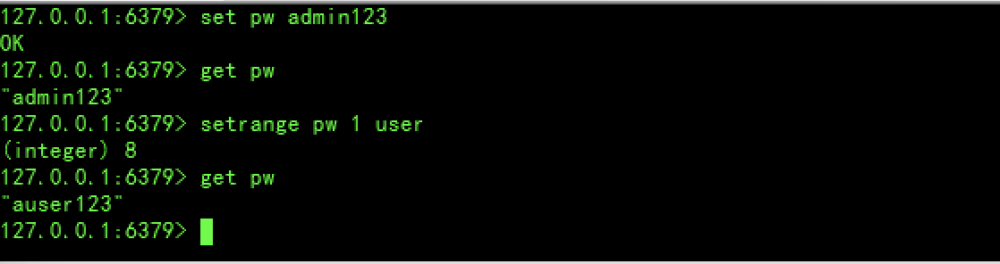
setrange pw 1 user 将key为pw的值从索引为1的开始进行替换，后面的由原来的字符补齐
3.1.2 Hash类型
Hash类型是String类型的field和value的映射表，或者说是一个String集合。它特别适合存储对象，相比较而言，将一个对象类型存储在Hash类型要存储在String类型里占用更少的内存空间，并方整个对象的存取。
常用命令
设值：hset hashname field value（hset是设值命令，hashname是集合名字，field是字段名，value是值） 取值：hget hashname field 批量设置：hmset hashname field1 value1 field2 value2 …. 批量取值：hmget hashname field1 field2 ... hsetnx：和setnx大同小异 hincrby：指定字段增加指定值 hexists：是否存在key，如果存在返回，不存在返回0 删除：hdel 删除指定的hash的field hlen：返回hash集合里的所有的键数值(size) hkeys：返回hash里所有的字段 hvals：返回hash的所有value hgetall：返回hash里所有的key和value
命令演示
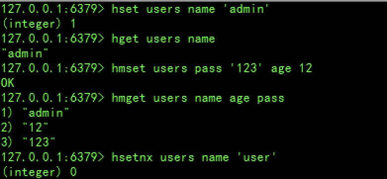
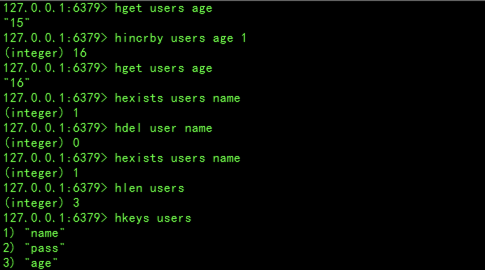
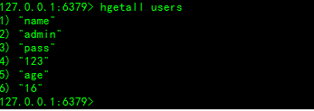
3.1.3 List类型
List类型是一个链表结构的集合，其主要功能有push、pop、获取元素等。更详细的说，List类型是一个双端链表的节后，我们可以通过相关的操作进行集合的头部或者尾部添加和删除元素，List的设计非常简单精巧，即可以作为栈，又可以作为队列，满足绝大多数的需求。
常用命令
lpush：从头部加入元素（栈，先进后出） rpush：从尾部加入元素（队列，先进先出） linsert：插入元素 lrange:获取指定索引内的所有元素 lset：将制定下表的元素替换掉 lrem：删除元素，移除n个，返回删除的个数n ltrim：保留制定key的值范围内的数据 lpop：从list的头部删除元素，并返回删除元素。 rpop：从list的尾部删除元素，并返回删除元素 rpoplpush list1 list2：从list1尾部删除元素，并将被移除的元素添加到list2的头部，返回被移除的元素，可以实现MQ llen：返回元素个数 lindex：返回名称为key的list中index位置的元素
命令演示

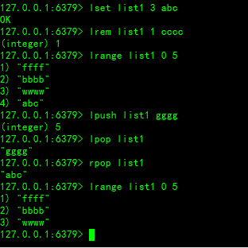
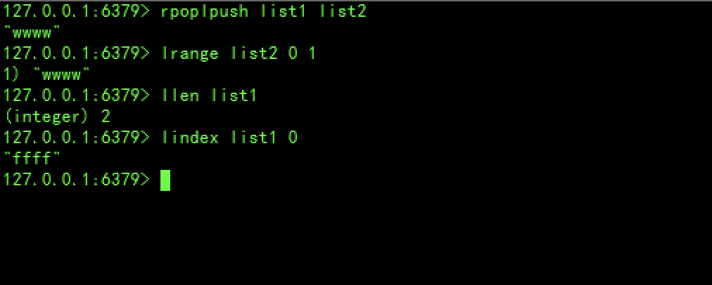
3.1.4 Set类型
set集合是string类型的无序集合，set是通过hashtable实现的，对集合我们可以取交集、并集、差集
常用命令
sadd：向名称为key的set中添加元素，set集合不允许重复元素。 smembers：查看set集合中的元素。 srem：删除set集合的元素 spop：随机返回删除的key sdiff：返回两个集合的不同元素（哪个集合在前面就以哪个集合为标准） sdiffstore：将返回的不同元素，存储到另一个集合里 sdiffstore set4 set2 set3 将set2 set3的比较结果保存到set4中 sinter：取交集 sinterstore：取交集后保存 sunion:取并集 sunionstore：取并集后保存 smove：从一个set集合移动到另一个set集合里 scard：查看集合里的元素个数 sismember：判断某个元素是否为集合中的元素，是，返回1。不是，返回0。 srandmember：随机返回一个元素
命令演示
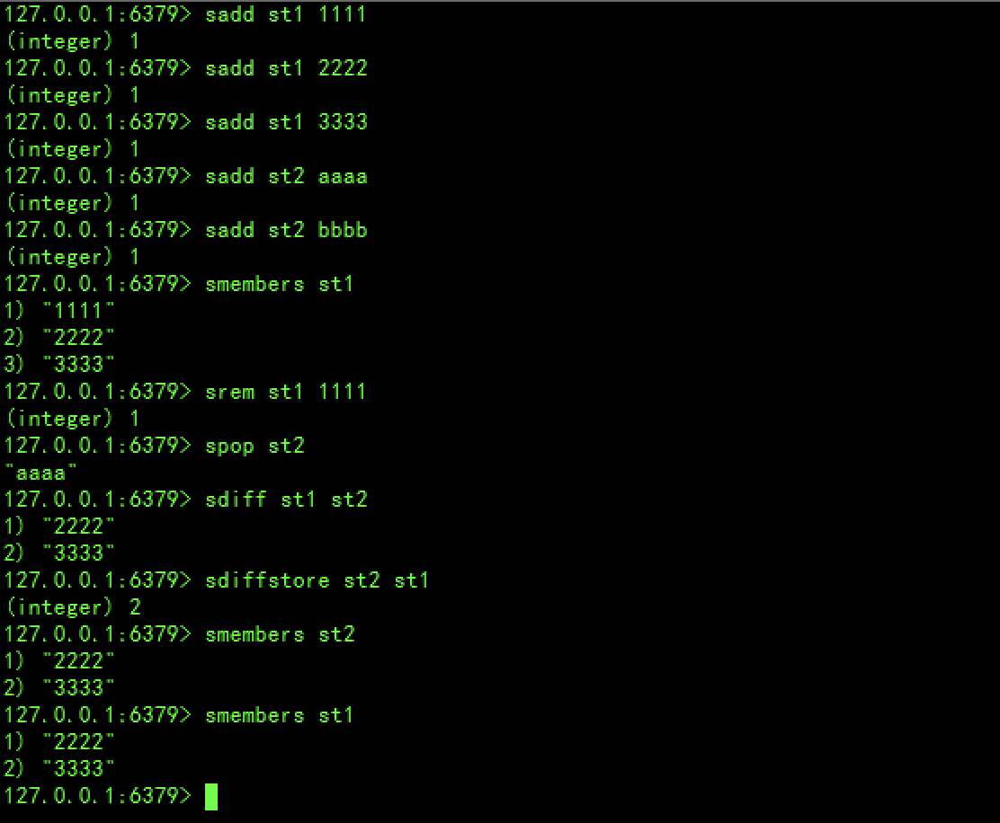
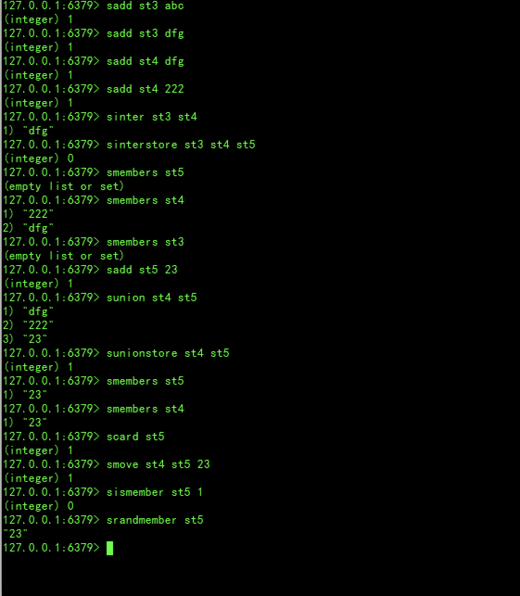
3.1.5 Zset类型
有序集合和集合一样也是string类型元素的集合,且不允许重复的成员。不同的是每个元素都会关联一个double类型的分数。redis正是通过分数来为集合中的成员进行从小到大的排序。
有序集合的成员是唯一的,但分数(score)却可以重复。 集合是通过哈希表实现的，所以添加，删除，查找的复杂度都是O(1)。 集合中最大的成员数为 232 - 1 (4294967295, 每个集合可存储40多亿个成员)。
常用命令
zadd：向有序集合中添加一个元素，该元素如果存在则更新顺序，如果分值相同元素不同会同时存在两个元素。 zrem ：删除zset名称key中的member元素 zrank 返回有序集合中指定成员的索引（从小到大排序） zrevrank 返回有序集合中指定成员的排名，有序集成员按分数值递减(从大到小)排序 zcard 返回集合里所有元素的个数 zcount 返回集合中score在给定区间中的数量 zincrby key increment member： 有序集合中对指定成员的分数加上增量 increment zrangebyscore key min max [WITHSCORES] [LIMIT] ：通过分数返回有序集合指定区间内的成员 zremrangebyrank key start stop ：移除有序集合中给定的排名区间的所有成员 zremrangebyscore key min max：移除有序集合中给定的分数区间的所有成员
命令演示
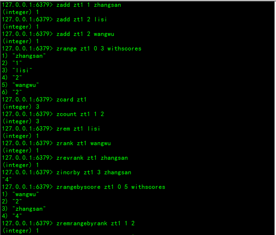

3.1.6 HyperLogLog
Redis 在 2.8.9 版本添加了 HyperLogLog 结构。 Redis HyperLogLog 是用来做基数统计的算法，HyperLogLog 的优点是，在输入元素的数量或者体积非常非常大时，计算基数所需的空间总是固定 的、并且是很小的。
在 Redis 里面，每个 HyperLogLog 键只需要花费 12 KB 内存，就可以计算接近 2^64 个不同元素的基 数。这和计算基数时，元素越多耗费内存就越多的集合形成鲜明对比。 但是，因为 HyperLogLog 只会根据输入元素来计算基数，而不会储存输入元素本身，所以 HyperLogLog 不能像集合那样，返回输入的各个元素。
小知识：
什么是基数?
比如数据集 {1，2,1,2} 那么这个数据集的基数集为 {1，2}, 基数(不重复元素)为2。 基数估计就是在误差可接受的范围内，快速计算基数。常用命令：
PFADD 新增元素 PFCOUNT 获取基数的估计值 PFMERGE 将多个 HyperLogLog 合并为一个 HyperLogLog
命令演示
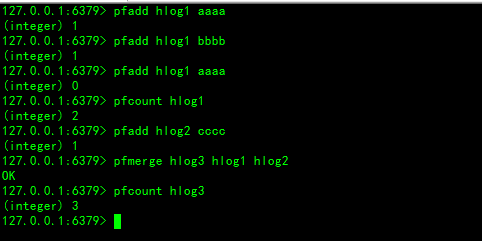
3.2 高级命令
3.2.1 常用命令
keys * : 返回满足的所有键 ,可以模糊匹配 exists ：是否存在指定的key，存在返回1，不存在返回0 expire：设置某个key的过期时间 del:删除某个key ttl：查看剩余时间,当key不存在时，返回 -2;存在但没有设置剩余生存时间时，返回 -1,否则，以秒为单位，返回 key 的剩余生存时间。 persist：取消过去时间 select : 选择数据库 数据库为0-15（默认一共16个数据库） s 设计成多个数据库实际上是为了数据库安全和备份 move key dbindex ： 将当前数据中的key转移到其他数据库 randomkey：随机返回一个key rename：重命名key echo：打印命令 dbsize：查看数据库的key数量 info：查看数据库信息 config get * 实时传储收到的请求，返回相关的配置 flushdb ：清空当前数据库 flushall ：清空所有数据库
命令演示
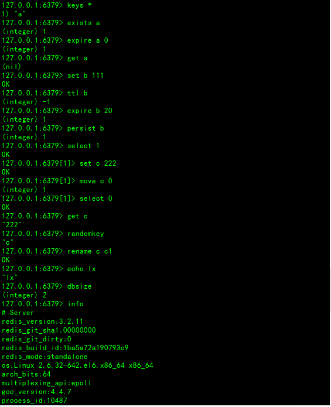
3.2.2 Redis事务
Redis 事务可以一次执行多个命令， 并且带有以下两个重要的保证：
事务是一个单独的隔离操作： 事务中的所有命令都会序列化、按顺序地执行。 事务在执行的过程中，不会被其他客户端发送来的命令请求所打断。 事务是一个原子操作： 事务中的命令要么全部被执行，要么全部都不执行
一个事务从开始到执行会经历以下三个阶段：
开始事务 命令入队 执行事务
常用命令
MULTI 开启事务 EXEC 执行事务 DISCARD 取消事务
命令演示：
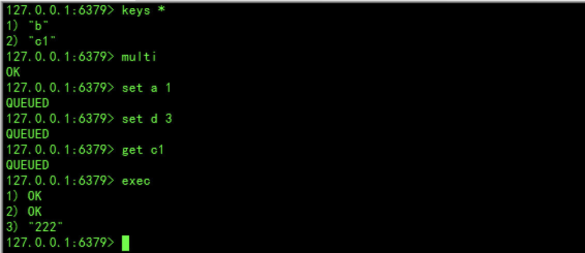
3.2.3 发布与订阅消息
Redis 发布订阅(pub/sub)是一种消息通信模式：发送者(pub)发送消息，订阅者(sub)接收消息。 Redis 客户端可以订阅任意数量的频道。 下图展示了频道 channel1 ， 以及订阅这个频道的三个客户端 —— client2 、 client5 和 client1 之间的关系
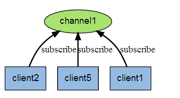
当有新消息通过 PUBLISH 命令发送给频道 channel1 时， 这个消息就会被发送给订阅它的三个客户端：
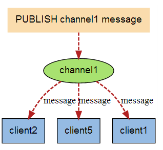
配置订阅和发布
常用命令
subscribe [频道] 进行订阅监听 publish [频道 发布内容] 进行发布消息广播
1、分别克隆额外的2个会话，重命名client1、client2 ，而且三个会话都运行redis的客户端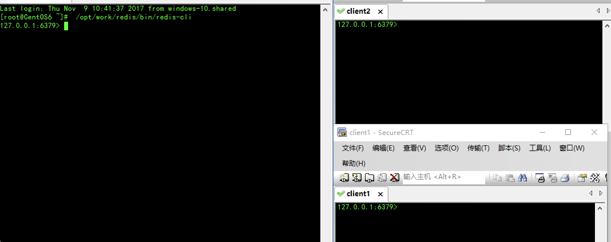
2、分别在client1和client2进行订阅
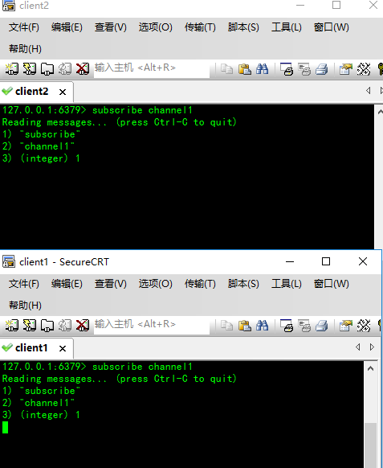
3、进行消息发布 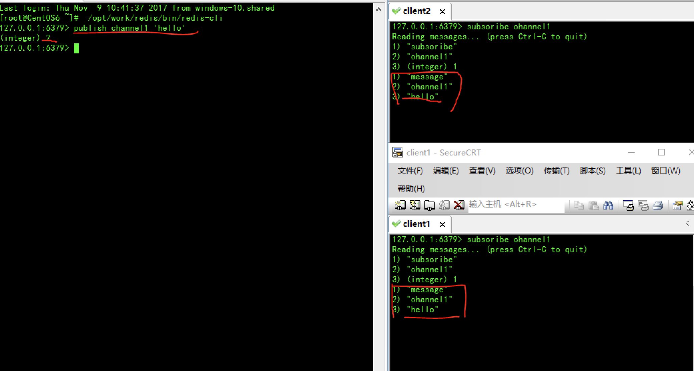
3.2.4 Redis 数据备份与恢复
数据备份
Redis SAVE 命令用于创建当前数据库的备份。
恢复数据
如果需要恢复数据，只需将备份文件 (dump.rdb) 移动到 redis 安装目录并启动服务即可。
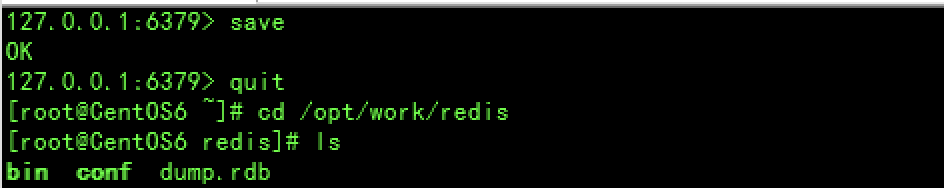
3.2.5 Redis 安全
因为redis速度相当快，所以一台比较好的服务器下，一个外部用户在一秒内可以进行15W次密码尝试，这意味着你需要设定非常强大的密码来防止暴力破解
可以通过 redis 的配置文件设置密码参数，这样客户端连接到 redis 服务就需要密码验证，这样可以让你的 redis 服务更安全
常用命令
vim /opt/work/redis/conf/redis.conf 编辑配置文件， 修改：#reqirepass foobared 为 ： reqirepass redis(你的密码)
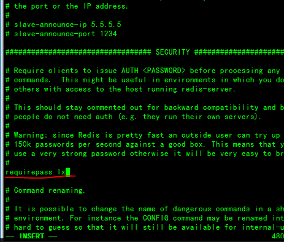
pkill redis-server 关闭redis-server ./bin/redis-server ./conf/redis.conf 启动redis ./bin/redis-cli 打开客户端
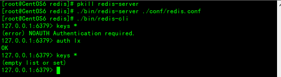
第四节 redis高级使用
4.1 主从复制
使用一台服务器进行模拟Redis的主从复制
4.1.1 概念
一般来说，要将Redis运用于工程项目中，只使用一台Redis是万万不能的，原因如下： 从结构上，单个Redis服务器会发生单点故障，并且一台服务器需要处理所有的请求负载，压力较大； 从容量上，单个Redis服务器内存容量有限，就算一台Redis服务器内容容量为256G，也不能将所有内容用作Redis存储内存，一般来说，单台Redis最大使用内存不应该超过20G。
考虑如下一种场景：电子商务网站上的商品，一般都是一次上传，无数次浏览的，说专业点也就是”多读少写”。
对于这种场景，我们可以使如下这种架构：
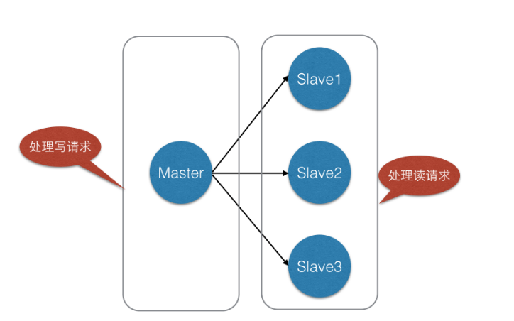
如图所示，将一台Redis服务器作主库(Matser)，其他三台作为从库(Slave)，主库只负责写数据，每次有数据更新都将更新的数据同步到它所有的从库，而从库只负责读数据。 这样一来，就有了两个好处： 读写分离，不仅可以提高服务器的负载能力并且可以根据读请求的规模自由增加或者减少从库的数量棒极了； 数据被复制成了了好几份，就算有一台机器出现故障，也可以使用其他机器的数据快速恢复。 需要注意的是：在Redis主从模式中，一台主库可以拥有多个从库，但是一个从库只能隶属于一个主库。
4.1.2 redis主从复制特点
1、Master可以拥有多个Slave； 2、多个salve可以连接同一个Master，还可以链接到其他的slave 3、主从复制不会阻塞Master，在同步数据时，master可以继续处理client请求 4、提供系统的伸缩性。
4.1.3 redis主从复制配置
在Redis中，要实现主从复制架构非常简单，只需要在从数据库的配置文件中加上如下命令即可： slaveof 主数据库地址 主数据库端口 主数据库不需要任何配置。
配置步骤：
1、重新安装一份redis,作为从库，拷贝redis.conf 并修改
端口号为6380 设置slaveof 主库ip地址 端口号 设置masterauth 主库密码
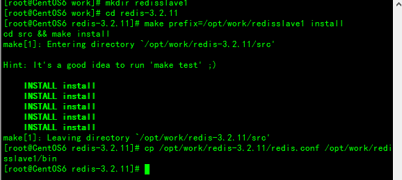
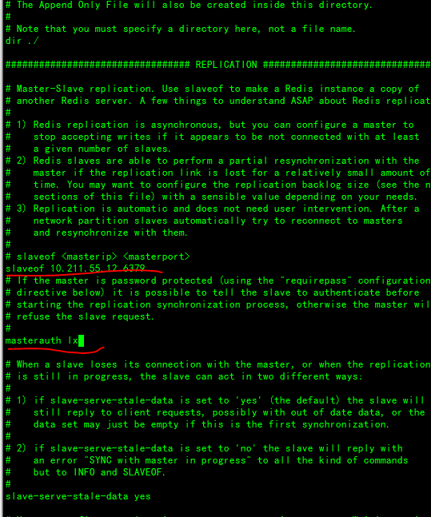
2、启动从库
/opt/work/redisslave1/bin/redis-server /opt/work/redisslave1/bin/redis.conf
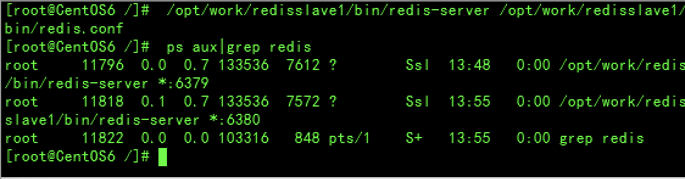
3、分别使用2个客户端连接主库和从库
拷贝连接会话，并重命名slave，打开客户端连接从库
在主库和从库的连接客户端中输入：
info replication
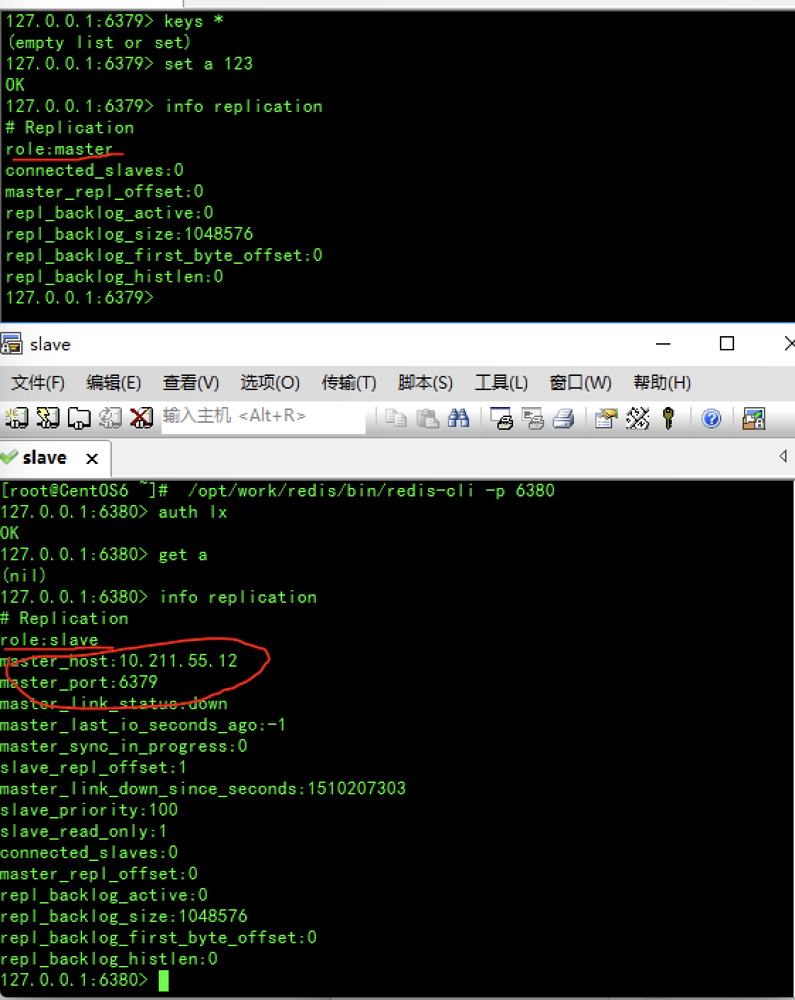
4、测试数据的主从复制
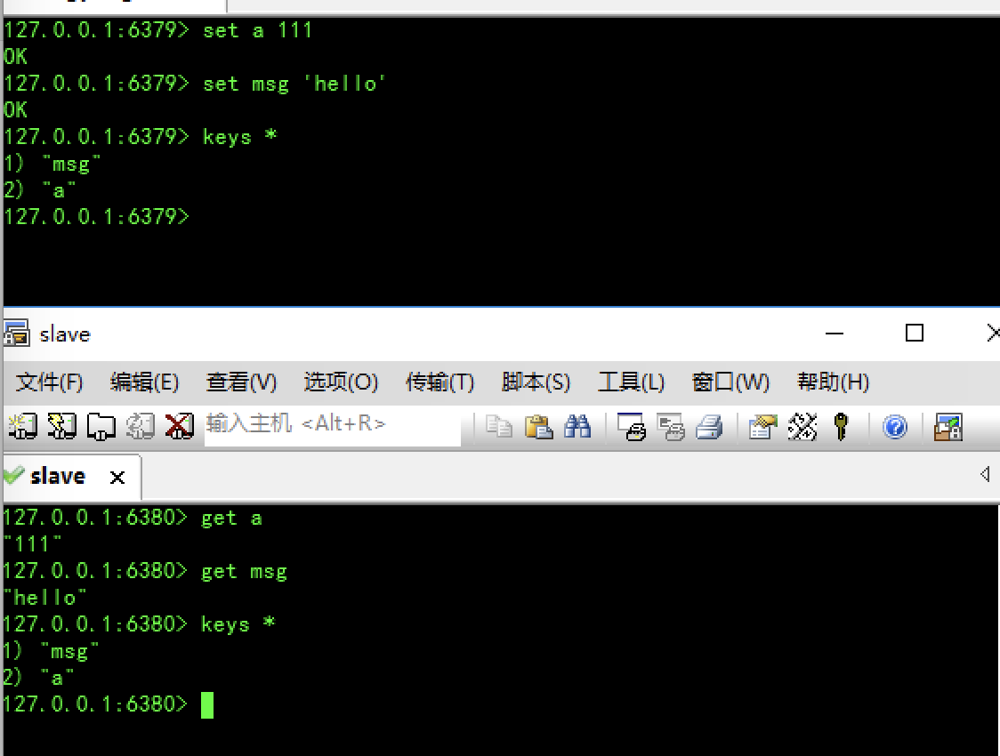如果主库宕机，那么
如果主库宕机，那么就无法再继续写入数据
4.2 哨兵模式
4.2.1 概念
Redis-Sentinel（哨兵模式）是官方推荐的高可用解决方案，当redis在做master-slave的高可用方案时，假如master宕机了，redis本身（以及其很多客户端）都没有实现自动进行主备切换，而redis-sentinel本身也是独立运行的进程，可以部署在其他与redis集群可通讯的机器中监控redis集群。
有了主从复制的实现之后，我们如果想从服务器进行监控，那么在redis2.6以后提供了一个”哨兵“机制，并在2.8版本以后功能稳定起来。 哨兵：顾名思义，就是监控Redis系统的运行状况
哨兵模式的特点
1、不时地监控redis是否按照预期良好地运行; 2、如果发现某个redis节点运行出现状况，能够通知另外一个进程(例如它的客户端); 3、能够进行自动切换。当一个master节点不可用时，能够选举出master的多个slave(如果有超过一个slave的话)中的一个来作为新的master,其它的slave节点会将它所追随的master的地址改为被提升为master的slave的新地址。 4、哨兵为客户端提供服务发现，客户端链接哨兵，哨兵提供当前master的地址然后提供服务，如果出现切换，也就是master挂了，哨兵会提供客户端一个新地址。
哨兵（sentinel）本身也是支持集群的 很显然，单个哨兵会存在自己挂掉而无法监控整个集群的问题，所以哨兵也是支持集群的，通常用三台哨兵机器来监控一组redis集群。
4.2.2 配置
配置哨兵模式主要是防止主库宕机，所以本文档就在从库中进行配置哨兵模式
拷贝配置文件，并修改
命令：
cp /opt/work/redis-3.2.11/sentinel.conf /opt/work/redisslave1/bin/ 拷贝哨兵的配置 vim /opt/work/redisslave1/bin/sentinel.conf 修改哨兵模式的配置文件
配置解释
dir： 日志路径，根据自己的要求保存。 sentinel monitor mymaster 10.0.31.144 6379 1 解释：#名称 #ip #端口号 # 投票选举次数（即有多少篇就被选举为主，这里节点少，就配置为1）。 sentinel down-after-millisecond mymaster 5000 解释：哨兵程序多久去监控一次集群，#默认 30s 检查一次，这里配置超时30000毫秒为宕机。 sentinel parallel-syncs mymaster 1 解释：有多少个从节点 sentinel failover-timeout mymaster 600000 解释：若哨兵在该配置值内未完成failover操作(即发生故障时，m/s切换)，本次failover失败 sentinel parallel-syncs mymaster 1 解释：有多少个从节点
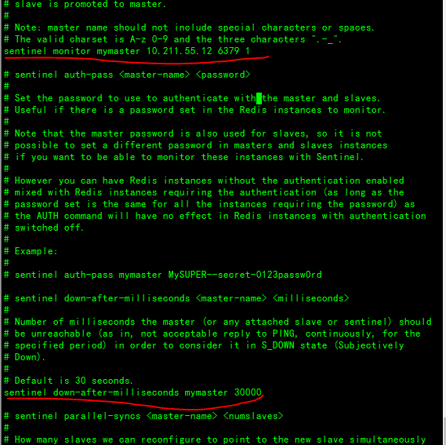
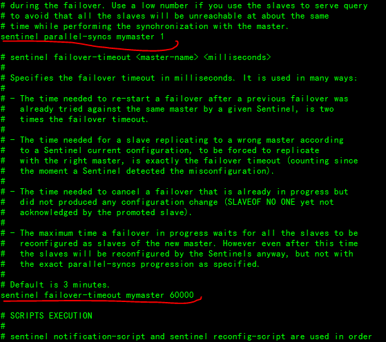
4.2.3 启动
/opt/work/redisslave1/bin/redis-server /opt/work/redisslave1/bin/sentinel.conf --sentinel 启动哨兵模式 /opt/work/redis/bin/redis-cli -h 10.211.55.12 -p 26379 info sentinel
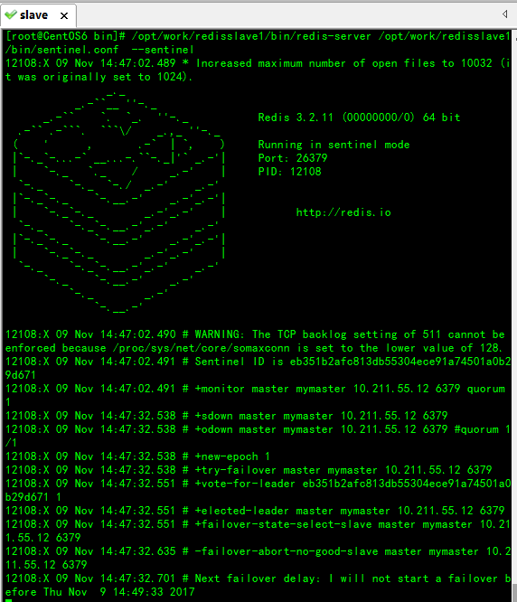
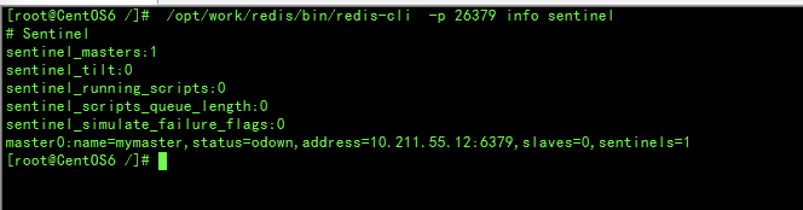
4.3 持久化机制
Redis持久化存储支持两种方式：RDB和AOF。RDB一定时间取存储文件，AOF默认每秒去存储历史命令，官方建议两种方式同时使用 没有持久化的redis和memcache一样，相当于一个纯内存的数据库
Redis是支持持久化的内存数据库，也就是说redis需要经常将内存中的数据同步到硬盘来保证持久化。
4.3.1 RDB
RDB(snapshotting快照)是将数据写入一个临时文件，持久化结束后，用这个临时文件替换上次持久化的文件，达到数据恢复。 优点：使用单独子进程来进行持久化，主进程不会进行任何IO操作，保证了redis的高性能 缺点：RDB是间隔一段时间进行持久化，如果持久化之间redis发生故障，会发生数据丢失。所以这种方式更适合数据要求不严谨的时候
默认方式，将内存中以快照的方式写入到二进制文件中，默认为dump.rdb，可以通过配置设置自动做快照持久化的方式。我们可以配置redis在n秒内如果m个key修改，就自动做快照
vim /opt/work/redis/conf/redis.conf 修改配置文件 RDB默认开启，redis.conf中的具体配置参数如下: save 900 1 #900秒内，超过1个key被修改，则发起快照保存 save 300 10 #300秒内，超过10个key被修改，则发起快照保存 save 60 10000 #60秒内，超过10000个key被修改，则发起快照保存 dbfilename dump.rdb 持久化数据存储在本地的文件 dir ./ 持久化数据存储在本地的路径，如果是在/redis/redis-3.0.6/src下启动的redis-cli，则数据会存储在当前src目录下
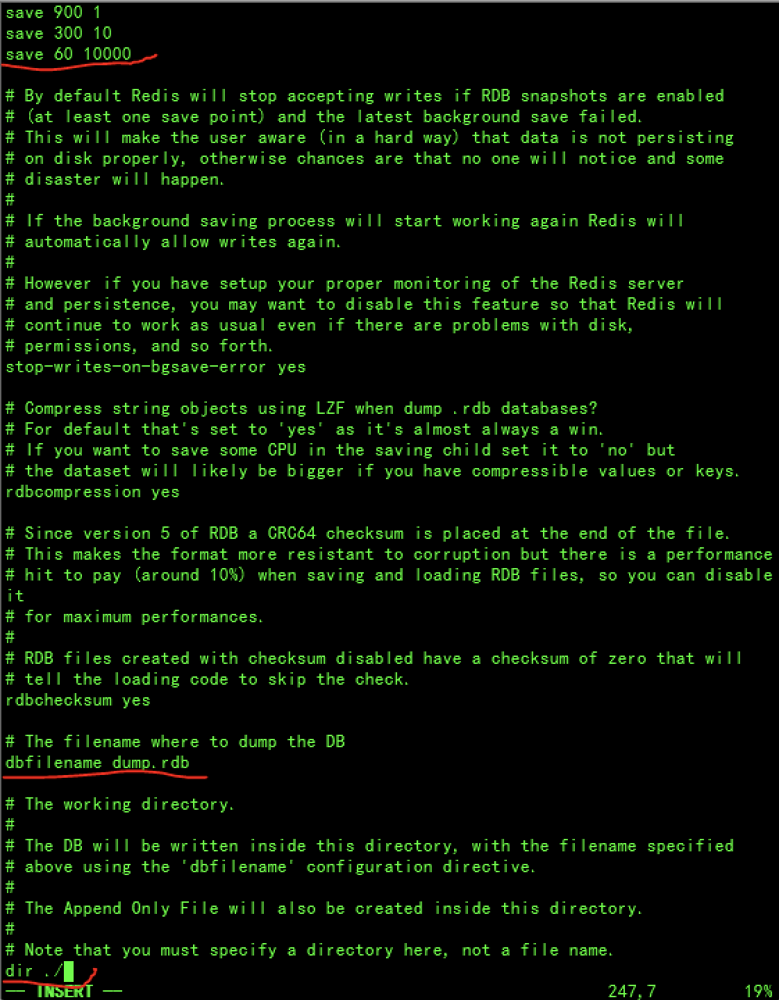
持久化过程： 当满足save的条件时，比如更改了1个key，900s后会将数据写入临时文件，持久化完成后将临时文件替换旧的dump.rdb。（存储数据的节点是到触发时间时的的节点） 使用RDB恢复数据： 自动的持久化数据存储到dump.rdb后。实际只要重启redis服务即可完成（启动redis的server时会从dump.rdb中先同步数据） 使用命令进行持久化save存储： ./redis-cli -h ip -p port save ./redis-cli -h ip -p port bgsave 一个是在前台进行存储，一个是在后台进行存储。
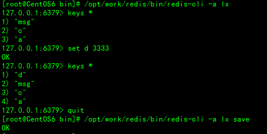
4.3.2 AOF
AOF(append-only file)是将执行过的指令记录下来，数据恢复时按照从前到后的顺序再将指令执行一遍，实现数据恢复 优点：可以保持更高的数据完整性，如果设置追加file的时间是1s，如果redis发生故障，最多会丢失1s的数据；且如果日志写入不完整支持redis-check-aof来进行日志修复；AOF文件没被rewrite之前（文件过大时会对命令进行合并重写），可以删除其中的某些命令（比如误操作的flushall）。 缺点：AOF文件比RDB文件大，且恢复速度慢。
类似于mysql日志，由于快照方式是在一定时间间隔做一次，所以可能发生redis意外宕机的情况就会丢失最后一次快照后的所有被修改的数据，aof比快照方式有更好的持久化型，是由于redis在使用aof时，redis会将每一个收到的写命令都通过write函数追加到命令中，在redis重新启动时会重新执行文件中保存的写命令在内存中重建这个数据库的内容，这个文件在redis/bin目录下，appendonly.aof。aof不是立即写到硬盘上，可以通过配置文件修改强制写到硬盘中。
修改配置
appendonly yes //启动aof持久化 ,持久化有三种方式： #appendfsync always //收到写命令就立即写入到磁盘，效率最慢，但是保证完整的持久化（最常用） #appendfsync everysec //每秒写一次硬盘，在性能和持久化方面做了很好的这种 #appendfsync no //完全依赖os，性能最好，持久化没保证。
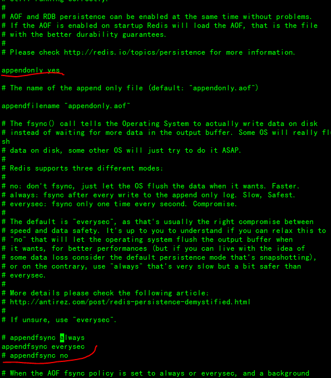
重启redis发现bin/目录下多了一个appendonly.aof
提示：开启aof后之前的rdb模式就时效了，且之前的数据会被清空。